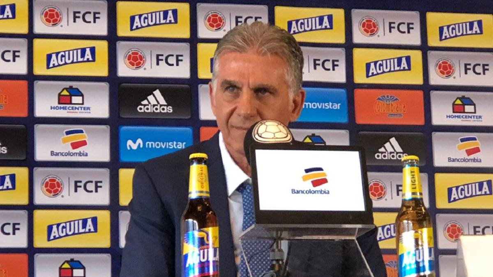

Esta es la primera lista de Carlos Queiroz en la Selección Colombia

El portugués Carlos Queiroz hizo pública su primera convocatoria a la Selección Colombia para los partidos amistosos contra Japón, el 22 de marzo, y Corea del Sur, el 26 del mismo mes, que servirán como preparación para la Copa América.
El DT entregó una lista de 23 jugadores. Cuatro de ellos son jugadores del medio local. No hay ningún debutante.
PORTEROS
MDavid Ospina (Napoli, Italia)
Camilo Vargas (Deportivo Cali)
Iván Arboleda (Banfield, Argentina)
DEFENSAS
Santiago Arias (Atlético de Madrid)
Helibelton Palacios (Atlético Nacional)
William Tesillo (León, México)
Yerry Mina (Everton, Inglaterra)
Dávinson Sánchez (Tottenham, Inglaterra)
Jeison Murillo (FC Barcelona, España)
Déiver Machado (Atlético Nacional)
Cristian Borja (Sporting, Portugal)
CENTROCAMPISTAS
Wílmar Barrios (Zenit, Rusia)
Gustavo Cuéllar (Flamengo, Brasil)
James Rodríguez (Bayern Munich)
Luis Díaz (Junior de Barranquilla)
Mateus Uribe (América de México)
Jéfferson Lerma (Bournemouth, Inglaterra)
Juan Fernando Quintero (River Plate, Argentina)
Sebastián Villa (Boca Juniors, Argentina)
DELANTEROS
Alfredo Morelos (Glasgow Rangers, Escocia)
Radamel Falcao García (Mónaco, Francia)
Duván Zapata (Atalanta, Italia)
Malcom
Luis Fernando Muriel (Fiorentina, Italia)